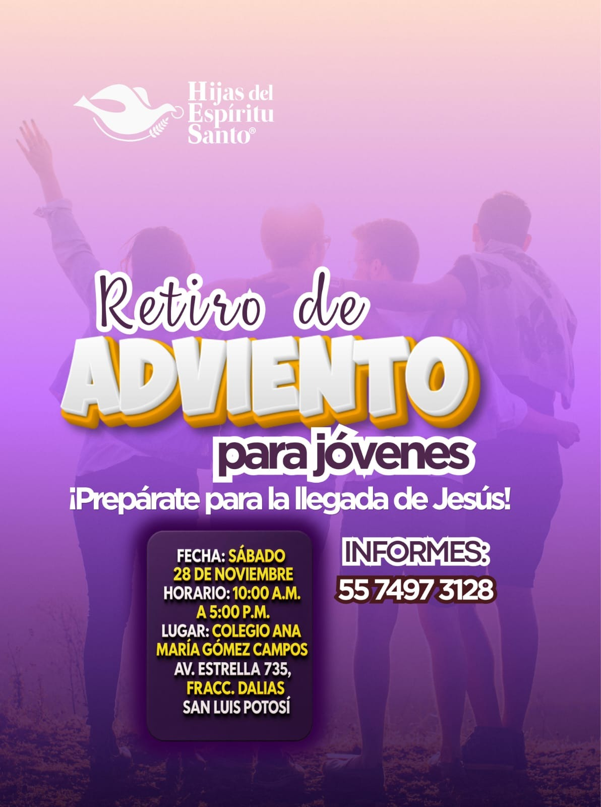
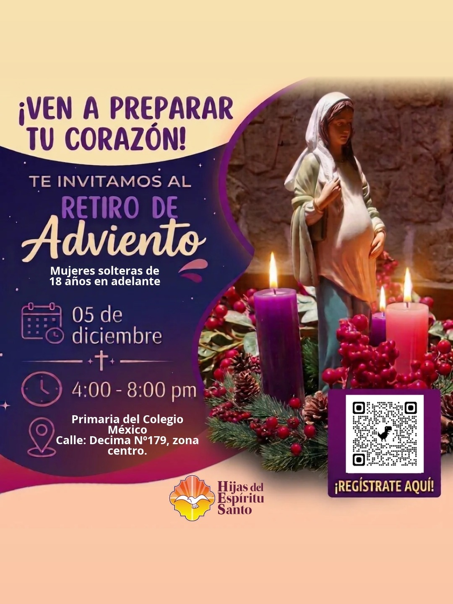
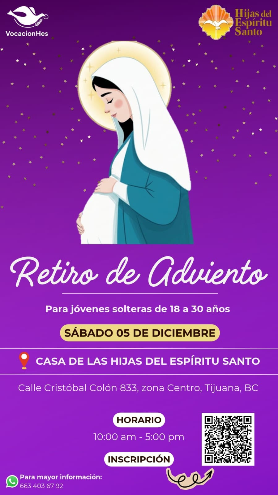
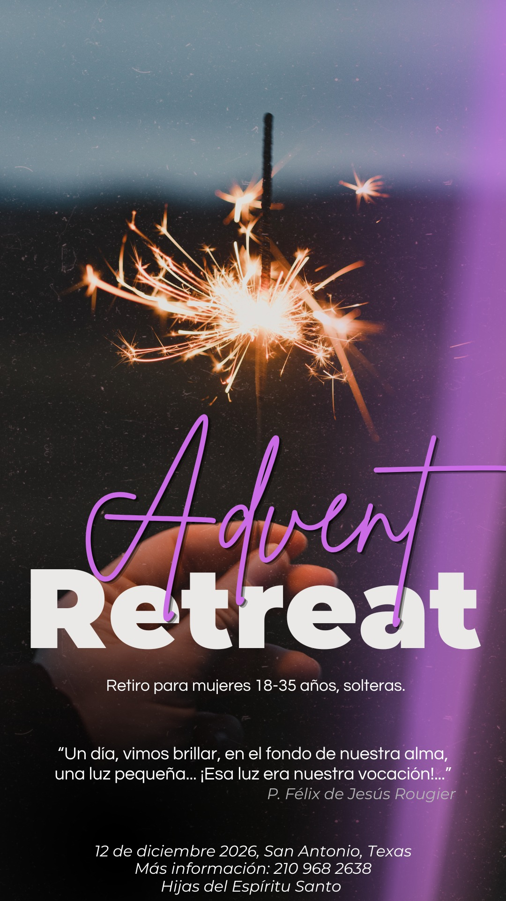
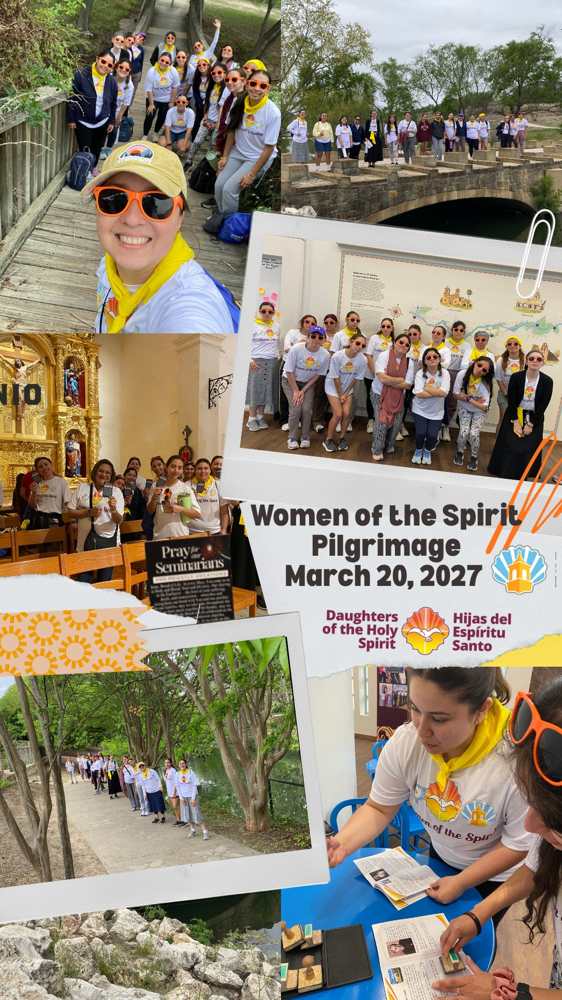
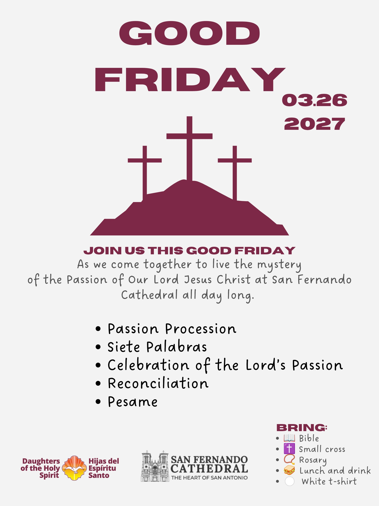

Sábado 28 de noviembre · 10:00 a. m. a 5:00 p. m.
Retiro de Adviento para jóvenes
San Luis Potosí, S. L. P.
Retiros, experiencias y encuentros para caminar juntas en el Espíritu.

Sábado 28 de noviembre · 10:00 a. m. a 5:00 p. m.
San Luis Potosí, S. L. P.

Sábado 5 de diciembre · 4:00 a 8:00 p. m.
Ensenada, B. C.

Sábado 5 de diciembre · 10:00 a. m. a 5:00 p. m.
Tijuana, B. C.

Sábado 5 de diciembre · 10:00 a. m. a 2:00 p. m.
Morelia, Mich.

Sábado 5 de diciembre · 9:00 a. m. a 4:00 p. m.
Naucalpan, Edo. de México

Sábado 12 de diciembre
San Antonio, Texas

Sábado 20 de marzo de 2027
San Antonio, Texas



Viernes 26 de marzo de 2027 · Todo el día
Catedral de San Fernando, San Antonio, Texas
Con gusto te damos toda la información.